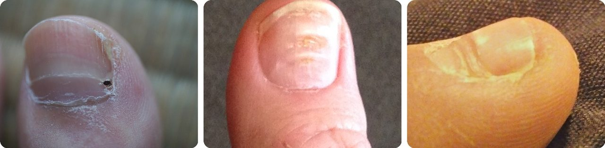

🌍 톱 10 발톱, 동물 발톱, 그리고 발굽
2026년 11월 19일
1. 💅 발톱은 손톱보다 절반 속도로 자라요
 손톱은 한 달에 약 3.5밀리미터 자라지만, 발톱은 겨우 약 1.6밀리미터 자라요. 동전 하나 두께쯤이에요. 발톱이 통째로 새로 자라는 데는 12~18개월이 걸리는데, 손톱은 3~6개월이면 돼요.
손톱은 한 달에 약 3.5밀리미터 자라지만, 발톱은 겨우 약 1.6밀리미터 자라요. 동전 하나 두께쯤이에요. 발톱이 통째로 새로 자라는 데는 12~18개월이 걸리는데, 손톱은 3~6개월이면 돼요.
손발톱은 케라틴으로 만들어져요. 동물 발톱, 발굽, 뿔과 같은 질긴 물질이에요. 살아 있는 부분은 뿌리 쪽 피부 아래에 숨어 있는 곳뿐이에요. 눈에 보이는 발톱은 죽은 세포가 층층이 꽉 눌린 거라서, 깎아도 아프지 않아요.
그리고 잘못 알려진 이야기 하나. 사람이 죽은 뒤에 손발톱이 계속 자라는 건 아니에요. 피부가 마르면서 오그라들어서 길어진 것처럼 보일 뿐이에요.
발가락마다 아주 얇은 발굽을 하나씩 달고 있다고 생각해 보세요.
2. 〰️ 발톱에 가로로 팬 홈을 보면 몇 달 전에 아팠던 걸 알 수 있어요

가끔 손발톱에 옆으로 가로지르는 깊은 홈이 생겨요. 이걸 보 선(Beau's line)이라고 하는데, 1846년에 처음 설명한 프랑스 의사 조제프 보의 이름을 땄어요.이렇게 생겨요. 심한 열, 병, 부상 때문에 피부 아래에서 손발톱을 만드는 곳이 잠깐 멈춰요 → 그 부분이 얇게 자라 나와요 → 움푹한 홈이 생겨요 → 손발톱이 자라면서 홈이 끝 쪽으로 천천히 밀려 나가요.
가와사키병을 앓은 아이들은 열이 나기 시작하고 한두 달 뒤에 이 선이 보이기도 해요. 발톱은 다 자라는 데 1년도 넘게 걸리니까, 그 홈이 오랫동안 남아 있어요.
나무 나이테 같은 건데, 아팠던 날들을 기록한 거예요.
3. 🐎 말발굽은 하나의 거대한 발톱이에요
 발굽은 두껍고 단단한 케라틴 껍데기로 덮인 발가락 끝이에요. 여러분의 손발톱과 같은 물질이죠. 말은 발마다 발굽이 딱 하나라서, 사실 발가락 네 개로 걸어 다니는 셈이에요.
발굽은 두껍고 단단한 케라틴 껍데기로 덮인 발가락 끝이에요. 여러분의 손발톱과 같은 물질이죠. 말은 발마다 발굽이 딱 하나라서, 사실 발가락 네 개로 걸어 다니는 셈이에요.
손발톱처럼 발굽도 계속 자라요. 야생마는 거친 땅을 걸으면서 자라는 만큼 닳게 해요.
사람과 사는 말은 단단하고 거친 땅을 충분히 걷지 못하거나, 길 위에서 무거운 짐을 나르는 경우가 많아요. 그래서 장제사(발굽 전문가)가 발굽을 다듬고, 보호하려고 편자를 박아 줘요.
한마디로, 편자는 발톱에 씌우는 휴대폰 케이스예요.
4. 🐈 고양이는 발톱을 날카롭게 지키려고 숨겨요
 고양이과 동물은 거의 다 쓰지 않을 때 발톱을 발 속으로 쏙 집어넣을 수 있어요. 집어넣어 두면 땅에 긁히지 않아서 계속 날카로워요.
고양이과 동물은 거의 다 쓰지 않을 때 발톱을 발 속으로 쏙 집어넣을 수 있어요. 집어넣어 두면 땅에 긁히지 않아서 계속 날카로워요.
고양이 발톱은 층층이 자라기도 해요. 가끔 바깥쪽 오래된 층이 자라기를 멈추고 떨어질 준비를 해요 → 고양이가 나무나 스크래처를 긁어요 → 오래된 층이 벗겨지고 아래에서 날카로운 새 발톱이 나와요.
고양이는 앞발 안쪽 위쪽에 며느리발톱도 있어요. 땅에 전혀 닿지 않아서 덜 닳고, 다른 발톱보다 더 날카롭고 긴 경우가 많아요.
다시 말해, 스크래처는 고양이가 연필을 깎는 곳이에요.
5. 🐸 털개구리는 자기 발가락뼈를 부러뜨려 발톱을 만들어요
 털개구리는 카메룬 같은 중앙아프리카 나라에 살아요. 공포 개구리라는 별명도 있는데, 다 이유가 있어요.
털개구리는 카메룬 같은 중앙아프리카 나라에 살아요. 공포 개구리라는 별명도 있는데, 다 이유가 있어요.
뭔가에 잡히면, 이 개구리는 발가락뼈의 뾰족한 끝을 붙잡고 있던 작은 뼈 혹에서 떼어 내요 → 그 날카로운 뼈를 자기 피부 밖으로 밀어내요 → 그러면 발톱이 생겨요. 케라틴이 아니라 뼈로 된 거라서 진짜 발톱은 아니에요.
과학자들은 찢어진 피부가 아물면서 발톱이 다시 들어간다고 생각해요. 번식기 수컷의 '털'도 진짜 털이 아니에요. 산소를 더 흡수하도록 도와줄지도 모르는 가느다란 피부 가닥이에요.
자기 손가락을 접이식 칼로 바꾼다고 상상해 보세요.
6. 🐒 여우원숭이는 긁는 용도로만 쓰는 '화장실 발톱'이 있어요
 여우원숭이, 갈라고, 로리스는 우리처럼 발가락 대부분에 평평한 발톱이 있어요. 그런데 발마다 둘째 발가락에는 휘어진 그루밍 발톱이 나 있어요. 화장실 발톱이라고도 불러요.
여우원숭이, 갈라고, 로리스는 우리처럼 발가락 대부분에 평평한 발톱이 있어요. 그런데 발마다 둘째 발가락에는 휘어진 그루밍 발톱이 나 있어요. 화장실 발톱이라고도 불러요.
이걸로 털을 빗고 긁는데, 주로 손이 잘 안 닿는 머리와 목 주변을 긁어요.
안경원숭이는 발마다 둘째와 셋째 발가락, 두 개에 그루밍 발톱이 있어요. 발이 거의 손 같아서, 엄지발가락으로 엄지손가락처럼 물건을 잡을 수 있어요.
발가락 하나에 빗이 달려 있다고 생각해 보세요.
7. 🪶 어떤 새는 가운데 발가락에 빗이 달려 있어요
 새들은 깃털을 잘 유지하려고 기름을 발라요. 그런데 부리로는 자기 머리에 닿지 않아요. 그래서 많은 새가 발을 써요. 부리에 묻은 기름을 발에 옮긴 다음, 발로 머리 깃털에 문질러 발라요.
새들은 깃털을 잘 유지하려고 기름을 발라요. 그런데 부리로는 자기 머리에 닿지 않아요. 그래서 많은 새가 발을 써요. 부리에 묻은 기름을 발에 옮긴 다음, 발로 머리 깃털에 문질러 발라요.
왜가리, 쏙독새, 올빼미, 군함조는 가운데 발가락 발톱 한쪽에 빗처럼 작은 톱니가 있어요. 빗살 발톱이라고 하는데, 머리를 빗고 기름 바르는 걸 도와주는 것 같아요.
어떤 새는 내린 날개 위로 다리를 올려서 긁고, 어떤 새는 날개 아래로 다리를 넣어서 긁어요. 어떤 방법을 쓰는지는 그 새가 어떻게 사느냐와 관련이 있을 수 있어요.
한마디로, 발톱으로 머리 손질을 하는 거예요.
8. 🐦 호아친 새끼는 날개에 발톱이 있어요
 호아친은 머리에 뾰족한 볏이 있는 남아메리카의 별난 새이고, 가이아나의 나라 새예요. 새끼는 태어날 때부터 날개마다 발톱이 두 개씩 있어요.
호아친은 머리에 뾰족한 볏이 있는 남아메리카의 별난 새이고, 가이아나의 나라 새예요. 새끼는 태어날 때부터 날개마다 발톱이 두 개씩 있어요.
이 발톱으로 나무를 타요. 매가 공격하면 어른 새들이 시끄럽게 날아다니며 매의 정신을 빼놓아요 → 새끼들은 둥지에서 슬금슬금 빠져나가요 → 들키면 아래 물로 뛰어들어 물속으로 헤엄쳐 도망쳤다가, 날개 발톱과 큰 발로 다시 기어 올라가요.
예전에는 사람들이 날개에 발톱이 있던 옛날 새인 시조새와 비교하기도 했어요. 하지만 지금 과학자들은 호아친의 발톱이 날기 전에 나무를 타려고 새로 생긴 재주라고 봐요.
다시 말해, 아기 새들이 팔로 나무를 사다리처럼 오르는 거예요.
9. 🐜 큰개미핥기는 발톱을 아끼려고 주먹 관절로 걸어요
 중앙아메리카와 남아메리카의 큰개미핥기는 앞발에 커다란 발톱이 있는데, 가운데 발톱이 제일 커요. 이 발톱으로 개미집과 흰개미집을 부수고, 길고 끈적한 혀로 벌레를 핥아 먹어요.
중앙아메리카와 남아메리카의 큰개미핥기는 앞발에 커다란 발톱이 있는데, 가운데 발톱이 제일 커요. 이 발톱으로 개미집과 흰개미집을 부수고, 길고 끈적한 혀로 벌레를 핥아 먹어요.
발톱이 닳지 않게 하려고, 큰개미핥기는 앞발의 주먹 관절로 걸어요. 고릴라나 침팬지랑 좀 비슷해요. 발톱은 말린 채로 땅에 닿지 않아요.
뒷발은 달라요. 발톱이 짧고, 발바닥을 평평하게 대고 걸어요.
연장이 상하지 않게 주먹을 쥐고 걷는 것과 같아요.
10. 🦖 어떤 공룡은 지금까지 육지 동물 중 가장 긴 발톱을 가졌어요
 테리지노사우루스('낫 도마뱀')는 약 6,900만~6,600만 년 전 지금의 몽골에 살았어요. 풀을 먹는 공룡으로 몸길이가 최대 10미터(33피트)였고, 손 발톱뼈는 50센티미터(20인치)가 넘었어요. 어른의 팔뚝과 손을 합친 것보다 길어요.
테리지노사우루스('낫 도마뱀')는 약 6,900만~6,600만 년 전 지금의 몽골에 살았어요. 풀을 먹는 공룡으로 몸길이가 최대 10미터(33피트)였고, 손 발톱뼈는 50센티미터(20인치)가 넘었어요. 어른의 팔뚝과 손을 합친 것보다 길어요.
1948년 고비 사막에서 처음 발톱이 발견됐을 때, 이름을 붙인 과학자는 거북이처럼 생긴 거대한 파충류가 이 발톱으로 해초를 거둬들였다고 생각했어요.
지금 전문가들은 이 발톱을 주로 나뭇가지를 입 쪽으로 끌어당기는 데 썼다고 봐요. 물론 튼튼한 팔로 자기를 지키는 데도 쓸 수 있었을 거예요.
여러분 팔만큼 긴 정원 가위를 떠올려 보세요.
재미있는 사실
화식조는 호주와 뉴기니에 사는 날지 못하는 커다란 새인데, 발마다 안쪽 발가락에 단검 같은 발톱이 있고 길이가 12.5센티미터(5인치)나 돼요. 힘센 다리로 발차기를 해서 '세계에서 가장 위험한 새'로 자주 불리고, 제2차 세계대전 때 뉴기니에 있던 군인들은 가까이 가지 말라는 경고를 받았어요. 그런데 기록을 보면 타조가 사람을 더 많이 다치게 해요. 남아프리카에서 해마다 두세 명이 타조 때문에 목숨을 잃거든요. 진짜로 가장 위험한 동물은 누구고, 그냥 무서운 소문만 난 동물은 누구일지 궁금해지지 않나요?
사진 출처 (Wikimedia Commons)
- #1: I painted my toenails <3 (flickr) by *~Much to My Dismay~*, CC BY 2.0
- #1: Purple Toenails - May 2011 - Well I Never (flickr) by Gareth1953 All Right Now, CC BY 2.0
- #1: Toes.jpg by unknown, Attribution
- #2: Big-toe-nail.jpg by 些細な日常, CC BY-SA 4.0
- #2: Beau's lines.JPG by LynnMcCleary, CC BY-SA 4.0
- #2: Beau's line on left, middle fingernail.jpg by Elipongo, Public domain
- #3: Hoof bottom view.jpg by Alex brollo, CC BY-SA 4.0
- #3: Equine hoof hc biovision.jpg by Dr. Christoph von Horst, CC BY-SA 3.0
- #3: Farrier Winthrop Washington.jpg by Guywelch2000, CC0
- #4: Cat paws and claws 1 2015-01-16.JPG by FASTILY, CC BY-SA 4.0
- #4: Black cat in repose.jpg by SMPL Reference, CC BY-SA 3.0
- #4: Cat yawn with exposed teeth and claws.jpg by DecafPotato, CC BY-SA 4.0
- #5: Astylosternus robustus · Mayoko, CG-NI, CG by no rights reserved, CC0
- #5: Hairy frog (Trichobatrachus robustus) 1.jpg by Melvin TOULLEC, CC BY-SA 4.0
- #5: Trichobatrachus robustus.JPG by Gustavocarra, CC BY-SA 4.0
- #6: Lemur catta toilet claw.jpg by Alex Dunkel (Maky), CC BY 3.0
- #6: Varecia variegata foot with toilet-claw.jpg by Maky (Alex Dunkel), CC BY 3.0
- #6: Galago moholi 276577285.jpg by i_c_riddell, CC BY 4.0
- #7: Ardea cinerea Putzkralle.jpg by Donkey shot (Christof Bobzin), CC BY 3.0
- #7: Barn Owl Pectinate Claw.jpg by Daniel Polin, CC BY-SA 4.0
- #7: Night Heron pectinate toe by Vedant Kasambe.jpg by Vedant Raju Kasambe, CC BY 4.0
- #8: Hoatzin chick.jpg by J. Arthur Thomson., Public domain
- #8: Opisthocomus hoazin · Careiro - Amazonas, Brasilien by no rights reserved, CC0
- #8: Hoatzin (flickr) by A.Davey, CC BY 2.0
- #9: Giant Anteaters - Brevard Zoo - Flickr - Rusty Clark (5).jpg by Rusty Clark from merritt usland FLA, CC BY 2.0
- #9: Myrmecophaga tridactyla · Minas Gerais, BR by no rights reserved, CC0
- #9: IMG_6346/Brazil/Mato Grosso Do Sul/Pantanal/Giant Antéater/Grand Fourmilier/Tamanoir (flickr) by dany13, CC BY 2.0
- #10: Therizinosaurus claw.jpg by Woudloper, CC BY-SA 3.0
- #10: Therizinosaurus claws lateral.jpg by Frank Black Noir, CC BY 2.0
- #10: Therizinosaurus TD.png by TotalDino, CC BY 4.0


_1.jpg){kind=link}


.jpg){kind=link}